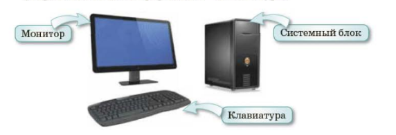
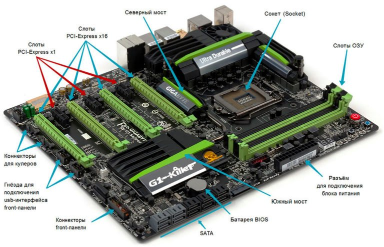
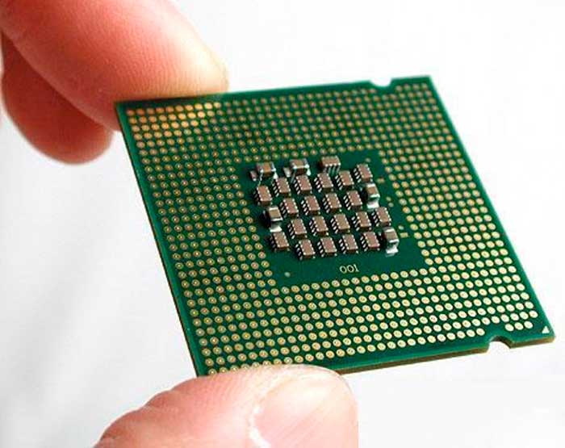
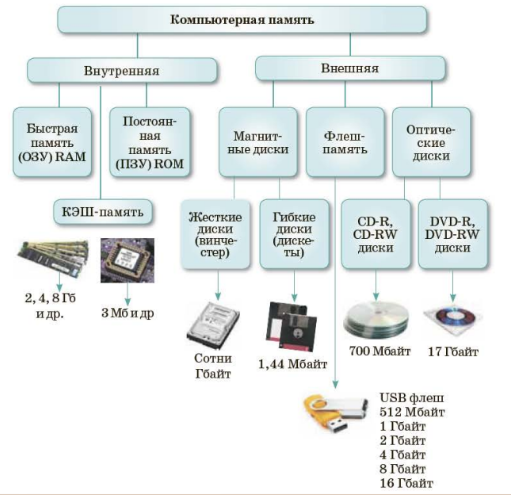
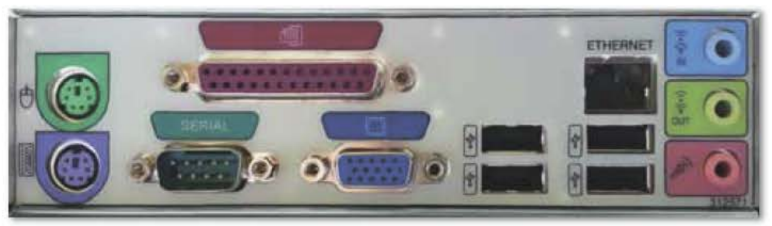

Привет, Сара! 👋 Сегодня узнаем, как устроен компьютер
📚 Что мы узнаем сегодня?
В младших классах мы уже знакомились с устройствами компьютера. Сегодня разберёмся глубже!
Что такое компьютер?
Компьютер (от англ. computer — «вычислитель») — это универсальное устройство для хранения, обработки и передачи информации.
Сегодня мы узнаем:
о взаимодействии основных устройств компьютера;
о назначении материнской платы, центрального процессора, портов связи.
🖥️ Основные устройства компьютера
Персональный компьютер состоит из следующих устройств:
🗄️
Системный блок
Главная часть. Содержит процессор, память и другие важные компоненты.
🖥️
Монитор
Устройство вывода информации. Показывает изображение и текст.
⌨️
Клавиатура
Устройство ввода. Позволяет вводить текст и команды.

Рис. 8. Основные устройства компьютера
Взаимодействие устройств
Когда компьютер запускается, все компоненты обрабатывают информацию и взаимодействуют друг с другом:
Процессор ↔
Внутренняя память ↔
Внешняя память Системная шина Устройства ввода ↔
Устройства вывода
Роли устройств:
Устройства ввода — для ввода, кодирования и представления данных;
Компьютерная память — для хранения данных и программ (внутренняя и внешняя);
Процессор — управляет обработкой данных и информации;
Устройства вывода — для вывода результата и печати;
Системная шина — обеспечивает передачу информации между всеми устройствами.
🔧 Что находится внутри системного блока?
Устройства ввода, вывода и дополнительные устройства находятся вне системного блока (монитор, клавиатура, мышь, принтер…). А внутри — вот что:
🟩
Материнская плата
Главная плата, через которую все устройства обмениваются информацией.
🧠
Микропроцессор
Мозг компьютера. Выполняет команды и обрабатывает данные.
💾
Внутренняя память
ОЗУ (RAM) и ПЗУ (ROM) — быстрая память для работы процессора.
📀
Дисковод
Читает и записывает информацию на съёмные носители.
Материнская плата
Материнская плата — основное аппаратное обеспечение компьютера. Через неё устройства системного блока взаимодействуют и обмениваются информацией. Она содержит микропроцессор, ПЗУ и другие компоненты. Её главная задача — обеспечить правильную работу компьютера.

Рис. 9. Материнская плата
Микропроцессор
Микропроцессор — основная часть узла обработки данных. Он выполняет команды, передаваемые программами. Чем быстрее работает микропроцессор, тем выше скорость компьютера.
Современные процессоры — многоядерные. Основная характеристика — тактовая частота (измеряется в МГц и ГГц). Чем выше частота, тем быстрее обрабатываются данные.

Рис. 10. Микропроцессор
Системная шина
Основная функция системной шины — передача информации между процессором и другими устройствами. При записи данных процессор отправляет адрес ячейки по шине адреса, а по шине данных — саму информацию.
💾 Память и порты компьютера
Внутренняя и внешняя память
ОЗУ (RAM) — оперативное (быстрое) запоминающее устройство. Вместе с ПЗУ (ROM) образует внутреннюю память. Обменивается данными с процессором во время работы.
В оперативной памяти хранятся только те данные и программы, которые обрабатываются в данный момент.
Внешняя память сохраняет информацию на внешних носителях (жёсткие диски, флешки, оптические диски и т.д.).

Схема 5. Память компьютера
Порты компьютера
Порт — это разъём для передачи данных. Примеры:
LPT (параллельный порт) — раньше использовался для принтеров;
COM (последовательный порт) — для модемов и других устройств;
USB — самый распространённый порт сегодня. Подключают флешки, мыши, клавиатуры, принтеры и многое другое.
Порт USB обычно находится на передней или задней панели компьютера.

Рис. 11. Порты компьютера
❓ Отвечаем на вопросы
Напиши ответы своими словами. Если нужна помощь — нажми «Подсказка».
1. Из каких частей и устройств состоит персональный компьютер?
Персональный компьютер состоит из: системного блока, монитора и устройств ввода (клавиатура, мышь). В системном блоке находятся процессор, память, материнская плата и другие компоненты.
2. Каково назначение системного блока?
Системный блок — главная часть компьютера. К нему подключаются все основные и дополнительные устройства. Внутри него находятся процессор, память, материнская плата и другие важные компоненты.
3. Какие устройства расположены в системном блоке?
В системном блоке находятся: материнская плата, микропроцессор, внутренняя память (ОЗУ и ПЗУ), дисковод, системная шина, электронные схемы и блок питания с системами охлаждения.
4. Каково основное назначение материнской платы?
Материнская плата — основное аппаратное обеспечение. Через неё все устройства системного блока взаимодействуют и обмениваются информацией. Она обеспечивает правильную работу компьютера.
5. Какую функцию выполняет микропроцессор?
Микропроцессор — «мозг» компьютера. Он выполняет команды программ, обрабатывает данные и управляет работой всех компонентов. Чем выше его тактовая частота, тем быстрее работает компьютер.
6. Что такое порты компьютера?
Порт — это разъём для передачи данных. Через порты (USB, LPT, COM и другие) к компьютеру подключают внешние устройства: принтеры, флешки, мыши, клавиатуры, модемы и т.д.
💭 Думаем и обсуждаем
Эти вопросы требуют размышления. Напиши свои мысли и при необходимости посмотри подсказку.
1. Почему процесс обмена информацией проходит через материнскую плату?
Материнская плата — это «главная дорога» компьютера. Все устройства подключены к ней и через неё обмениваются данными. Без материнской платы процессор, память и другие части не смогли бы «общаться» друг с другом.
2. Почему все компьютерные устройства взаимодействуют друг с другом?
Компьютер работает как единая система. Чтобы выполнить задачу (например, открыть файл), нужны данные из памяти, команды процессора, отображение на мониторе и т.д. Устройства должны взаимодействовать, чтобы результат появился на экране.
3. Для чего предназначены порты компьютера?
Порты нужны для подключения внешних устройств к компьютеру. Через них передаются данные: можно подключить флешку, принтер, мышь, клавиатуру, наушники и многое другое. Без портов компьютер был бы «закрытой коробкой».